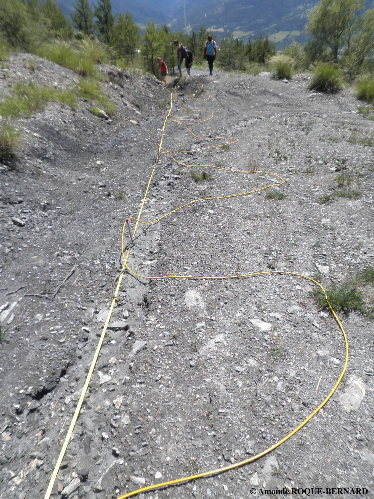

October 2022 - Now
RPA Consulting/Developer
L'Oiseau Rare
In mission at Crédit Agricole - Technologies et Service
[L'Oiseau Rare website]
[CATS website]
June - Septembre 2022
Scientific mediation - Research Engineer
OZCAR (French network of Critical Zone Observatories: Research and Applications)
CRITEX (Innovative equipment for the Critical Zone)
In collaboration with Jérôme Gaillardet and Virginie Entringer
[OZCAR website]
[CRITEX website]
2018 - 2022
Dynamic of suspended transport in two small Guadeloupean catchments: Bras-David and Capesterre
PhD, Earth and Environnemental Sciences,
Université Paris Cité, Institut de Physique du Globe de Paris
Departement of Geological Fluid Dynamics
Supervised by Eric Lajeunesse, Antoine Lucas and Eric Gayer
[Abstract ]
The transport of fine particles in suspension in rivers plays a key role in the erosion of continents and in the dynamics of landscapes. It is therefore important to understand the dynamics of this transport. River discharge is the main driver of sediment transport. Yet the relation between the suspended load concentration and the discharge is not unequivocal, and both clockwise and counter-clockwise loops, or hysteresis, are commonly observed in many rivers.
To explain this phenomenon, we propose a phenomenological model for the suspended transport that accounts for the exchange of fine particles between the riverbed and the water column. This model involves three parameters: (1) a threshold water level, which characterizes the shear stress, above which the flow begins to entrain fine particles from the bed, (2) an erosion rate that characterizes the intensity of sediment entrainment, and (3) a settling velocity accounting for sediment deposition, which is related to the size of the transported grains.
A theoretical investigation, based on synthetic floods, allows us to estimate the sensitivity of the model output to the input parameters. We show that the model accounts for counter-clockwise hysteresis of the concentration-discharge relation like those observed in the time series of many rivers. We then test the validity of the model against data collected in the Capesterre and Bras-David catchments, two small catchments (about 15 km2), located in Guadeloupe, monitored by the Observatoire de l’Eau et de l’éRosion aux Antilles (ObsERA). Although the model is based on simplifying assumptions, it consistently reproduces our field data and successfully captures the hysteretic counter-clockwise behavior of the concentration-discharge relation.
Using inversion methods, we evaluate the model parameters on a few isolated floods and then on longer time series, of duration about two weeks. We also show that the characteristic size of transported grains can be derived from turbidity measurements, even in the absence of a concentration-turbidity relation. The model also demonstrates its effectiveness in quantitatively reproducing fine particle transport in a small river, at the flood scale and over longer periods, typically two weeks. Yet the model fails to represent some flood events, characterized by a clockwise hysteresic loop in the concentration-discharge relation. We suspect that transport during these events is dominated by the input of fine particles originating from hillslopes, a process that is not accounted for by our model.
2018
February - July
Sensor model and photogrammetry of Titan in the microwave domain based on Cassini data
Institut de Physique du Globe de Paris (IPGP)
Department of Planetology and Space Sciences
Supervised by Antoine Lucas, in collaboration with Ewelina Rupnik from IGN
[Abstract ]
The Cassini-Huygens mission allowed the mapping of Titan thanks to its imaging RADAR. On this occasion, morphologies very similar to those on Earth were observed: dunes, plains, lakes, mountains... Notably because the temperature and pressure conditions are different, these observations raise a question concerning the processes involved. Are these morphologies the result of mechanical and climatic processes similar to those that shape the Earth's surface?
To answer these questions, it is necessary to start by characterizing their topography, which is the first order three-dimensional information. However, this information is not directly available with the observations of the Cassini probe. Using RADAR data in SAR mode and photogrammetry principles, this study aims to set up a procedure for reconstructing digital terrain models by radargrammetry based on the MicMac software suite developed at IGN and partly within the IPGP teams. For this purpose, a physical modelization of the sensor has been performed. Then a fitting by RPC has been done and a calculation has been made in order to use the considered data in the MicMac suite. Parameterization tests on the correlation were performed to optimize the accuracy of the numerical field model. Finally, the results are compared with those obtained by previous studies using the commercial software SOCET SET.
Our results show that our procedure, in addition to being based on open-source and free tools, allows us to significantly improve the correlation of images provided by the Cassini probe. This work thus opens encouraging perspectives to implement a complete radargrammetry processing chain in a planetary science context.
2017
March - July
Photometry of the asteroid Vesta by high precision astrometry: Application to bright features
IPGP, Laboratoire Astrophysique des Interactions Multi-échelle (AIM) du CEA Saclay
Laboratoire d’Excellence UnivEarthS, CNRS – Projet I12
Supervised by Antoine Lucas and Cécile Ferrari
[website]
[Abstract ]
During its one-year orbital mission, the Dawn probe mapped the surface of Vesta, brightest object in the Asteroid Belt. Features, such as craters, avalanches, cliffs and ejectas, with unexpected and unexplained brightness were noticed over various phase angles.
In order to explain these variations in brilliance, here in the crater Cornelia and the Matronalia Rupes cliff, the Hapke model, requently used in photometry, is tested, throughout a Monte Carlo and Bayesian approach. The several parameters of the model allow to characterize photometrically and physically the local surface of Vesta (in terms of simple scattering albedo, porosity, roughness, direction and shape of the scattering lobe). Due to lack of data near the opposition effect (low phase angles), a more suitable Hapke model is used, without the opposition effect functions. Tests performed on synthetic data validate this choice.
Results for the seven bright features show that the porosity parameter cannot be constrained by the model, nor by the data. All Cornelia avalanches have a tendency to backscatter in a rather anisotropic way whereas it is undetermined for the Matronalia Rupes areas, due to insufficient data. Almost all of seven features (except one) share a quite similar photometric roughness where it could be expected to be more various due to their diverse morphology.
2016
June - July
Simulation of lunar transits: determination of detectability criteria for the CHEOPS mission – Application to Kepler data
IPGP, European Space Agency (ESA), CHEOPS Mission
Supervised by Sébastien Charnoz
[website]
January - February
Simulation of lunar transits: determination of detectability criteria for the CHEOPS mission
IPGP, ESA, CHEOPS Mission
Supervised by Sébastien Charnoz
[website]
[interneship report (in french)]
2015
June - July
Determination of criteria for the selection of exoplanets likely to have moons in the framework of the CHEOPS space mission
IPGP, ESA, CHEOPS Mission
Supervised by Sébastien Charnoz
[website]
[interneship report (in french)]
2022
Geophysics Field Course Contributor
Summer School OZCAR
Geophysics Field Course : electrical soil prospection based on the electrical resistivity of the soils
of the Valette landslide, in Barcelonnette (04400, France)
With Damien Jougnot and Marc Dumont
[Description ]
The objective of the geophysics field course was to carry out a soil prospection/exploration.
This exploration allowed us first to map the soil at depth, and thus to determine the structure of the subsurface layers.
In a second step, this led us to visualize the fault plane and the structure of the active part of the Valette landslide.
We used the method of electrical soil prospection which is based on the electrical resistivity of the soil.
It measures the variations of the electrical resistivity of the soil which translates the difficulty with which an electric current can tavel in a given volume of ground.
The electrical resistivity depends essentially on the porosity of the soil, i.e. the size and homogeneity of the constituent grains of the sediment. A very heterogeneous soil, with a large proportion of coarse gravel is therefore very resistant. A clayey alluvial sedimentary layer, where the grains are fine and well sorted, has a lower resistivity.

2018 - 2021
Teaching assistant
Université Paris Cité, Institut de Physique du Globe de Paris
Earth Sciences
With Jean-Paul Montagner and Cinzia Farnetani
Undergrades
Python Programming - Data Processing and Analysis in Earth Science
With Eric Gayer and Maylis Landeau
Post-grades

{kind=link}
{kind=link}
{kind=link}
{kind=link}
{kind=link}